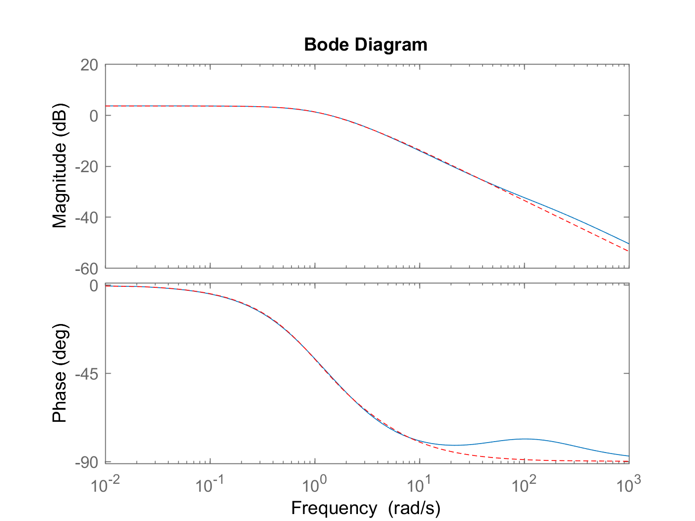
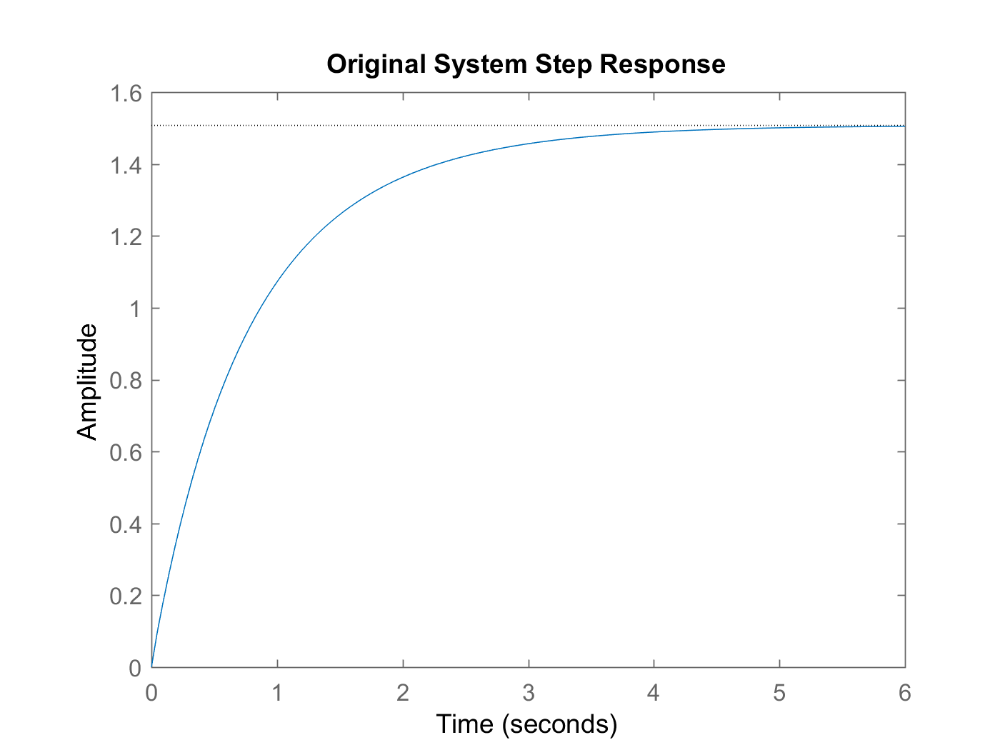
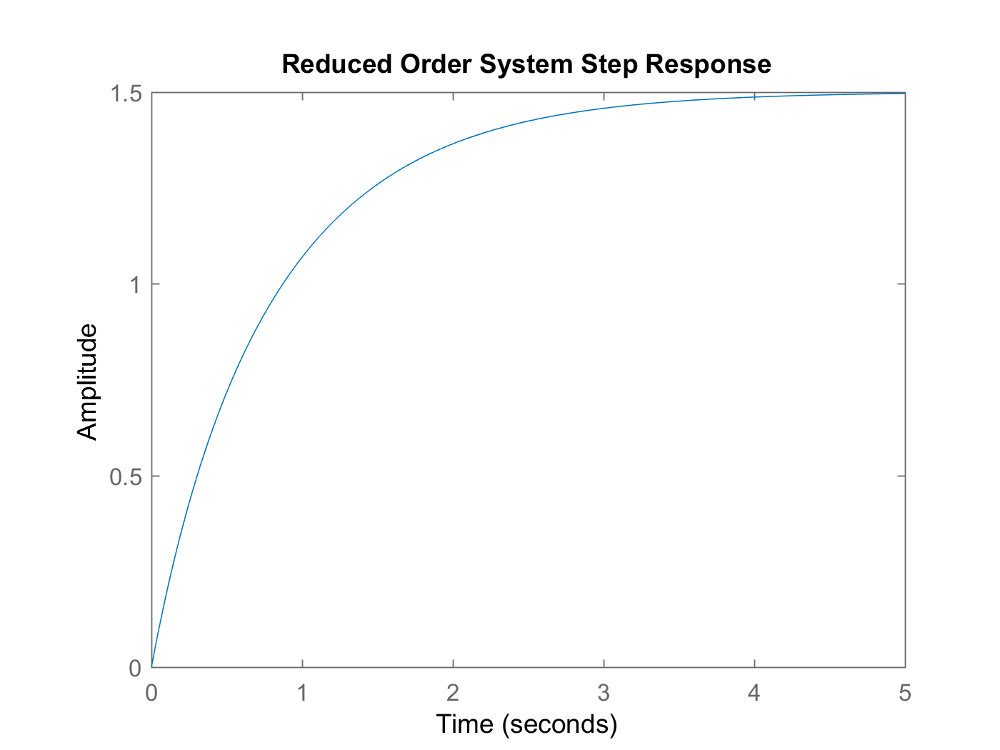
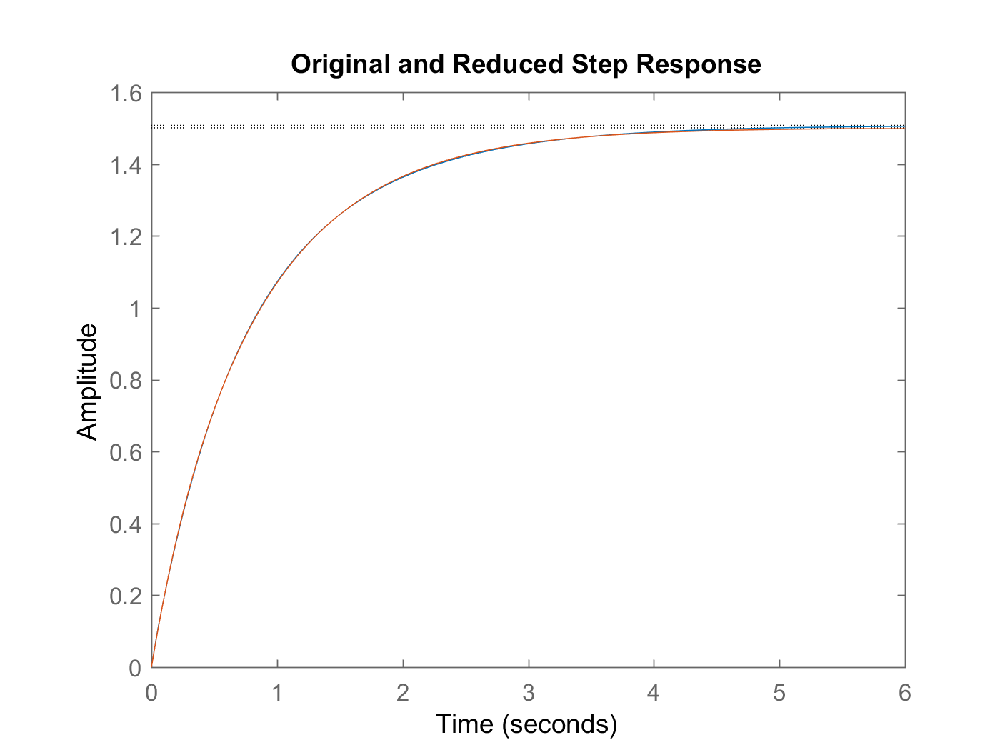

ECES 512 HW 9
Bhautik Amin
Contents
Instructor Problem 1
Given the system:
A = diag([-1 -2, -100, -200]) B = [1;1;1;1] C = [1 1 0.5 0.5] D = 0
A =
-1 0 0 0
0 -2 0 0
0 0 -100 0
0 0 0 -200
B =
1
1
1
1
C =
1.0000 1.0000 0.5000 0.5000
D =
0
Find the balanced realization and compare the transfer functions to original and balanced realization
sys_org = ss(A,B,C,D);
Original System Transfer Function
sys_tf_org = zpk(sys_org)
sys_tf_org = 3 (s+173) (s+77.51) (s+1.499) ----------------------------- (s+200) (s+100) (s+2) (s+1) Continuous-time zero/pole/gain model.
Balanced Realization Transfer Function (balread() returns: [Realization, Hankel Singular Values )
[sys_bal, G] = balreal(sys_tf_org); tf_bal = zpk(sys_bal)
tf_bal = 3 (s+1.499) (s+77.51) (s+173) ----------------------------- (s+200) (s+100) (s+2) (s+1) Continuous-time zero/pole/gain model.
Find a reduced order system by eliminating the two states from the balanced realization that have the lowest Hankel singular values
G'
ans =
0.7312 0.0192 0.0033 0.0001
We can see that the last two states have the lowest singular values
sys_reduced = modred(sys_bal, 3:4,'Truncate')
sys_tf_red = zpk(sys_reduced)
sys_reduced =
A =
x1 x2
x1 -1.351 -0.6811
x2 -0.6811 -3.438
B =
u1
x1 -1.406
x2 -0.3636
C =
x1 x2
y1 -1.406 -0.3636
D =
u1
y1 0
Continuous-time state-space model.
sys_tf_red =
2.1078 (s+2.977)
------------------
(s+1.148) (s+3.64)
Continuous-time zero/pole/gain model.
Compare the results by looking at the bode plots of each
figure(1)
bodeplot(sys_tf_org, sys_tf_red, 'r--')
 Where in the dotted red line represents the reduced order system and the blue represents the original system. We can see that the reduced order system's phase plot is has a noticiable difference than the original system.
From the bode plot, we can see that the
Compare the step response of the original and reduced order system. Look at the final value and also the initial rise time (blow up graphs and see this around the initial and terminal values)
figure(2) step(sys_tf_org) title('Original System Step Response') figure(3) step(sys_tf_red) title('Reduced Order System Step Response') figure(4) step(sys_tf_org) hold on; step(sys_tf_red) title('Original and Reduced Step Response')  